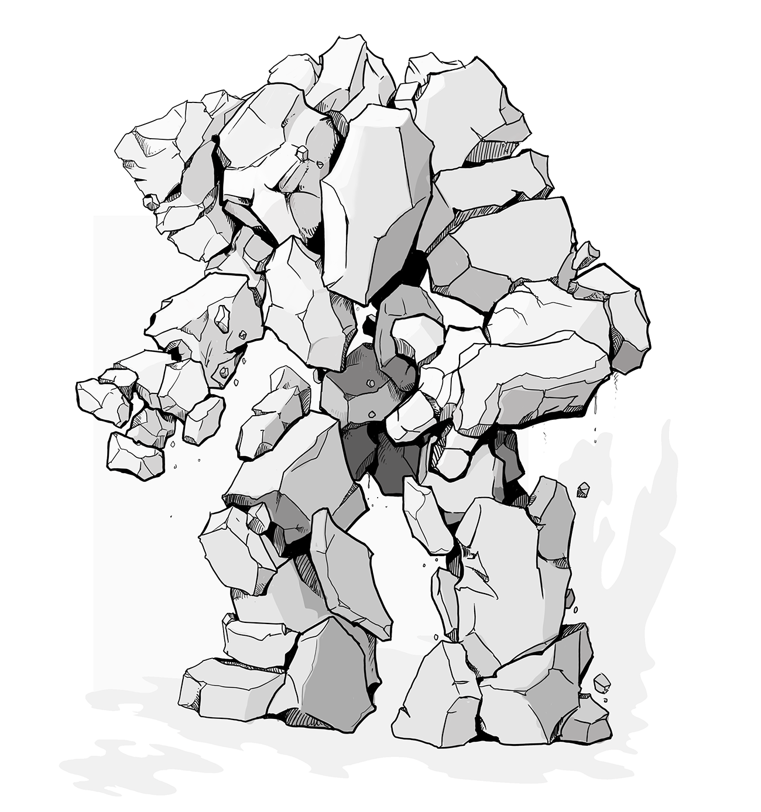

Complete Monster
by
Radaghast Kary
← Stone Giant Elders
↑Index↑
Stone Greater Golem →

Illustration by Mariana Ruiz Villarreal,
Public Domain
Stone Golem
also known as
Stoned Golem
is a
Golem
5e
Unaligned
D&D 5 facts
Size: Large
Type:
Construct
CR: 10
D&D 5 sources
Monster Manual
, p. 170
D&D 5 links
Stone Golem in 5e d20 SRD
Stone Golem on AideD&D
4e
D&D 4 facts
Level: 17
Type: Elite Soldier
XP: 3200
Entry: Golem
D&D 4 sources
Monster Manual
, p. 142
D&D 4 links
Stone Golem on D&D Insider
3e
Pathfinder 2 facts
Family:
Golem
Level: 11
Pathfinder 2 sources
Bestiary
Pathfinder 2 links
Stone Golem Monster in Pathfinder 2 SRD
D&D 3.5 facts
Type:
Construct
Size: Large
CR: 11
D&D 3.5 sources
Monster Manual
, p. 137
D&D 3.5 links
Stone Golem in 3.5e d20 SRD
TN
Munchkin d20 facts
Size: Large
Type:
Construct
HD: 27d10 (148hp)
CR: 14
Munchkin d20 sources
Monster Manual
, p. 36
Pathfinder sources
Bestiary
Pathfinder links
Stone Golem in Pathfinder 1 SRD
1e
BLUEHOLME sources
BLUEHOLME Journeymanne Rules
BLUEHOLME links
Stone Golem Dreamscape Design
0e
N
S&W
facts
AC: [14]
Attacks: fist (3d8)
HD: 16
HDE: 16
Move: 2
Special: See Below
XP: 3200
S&W
sources
The Blue Book of Dangers and Dweomers
, p. 87
{kind=link}